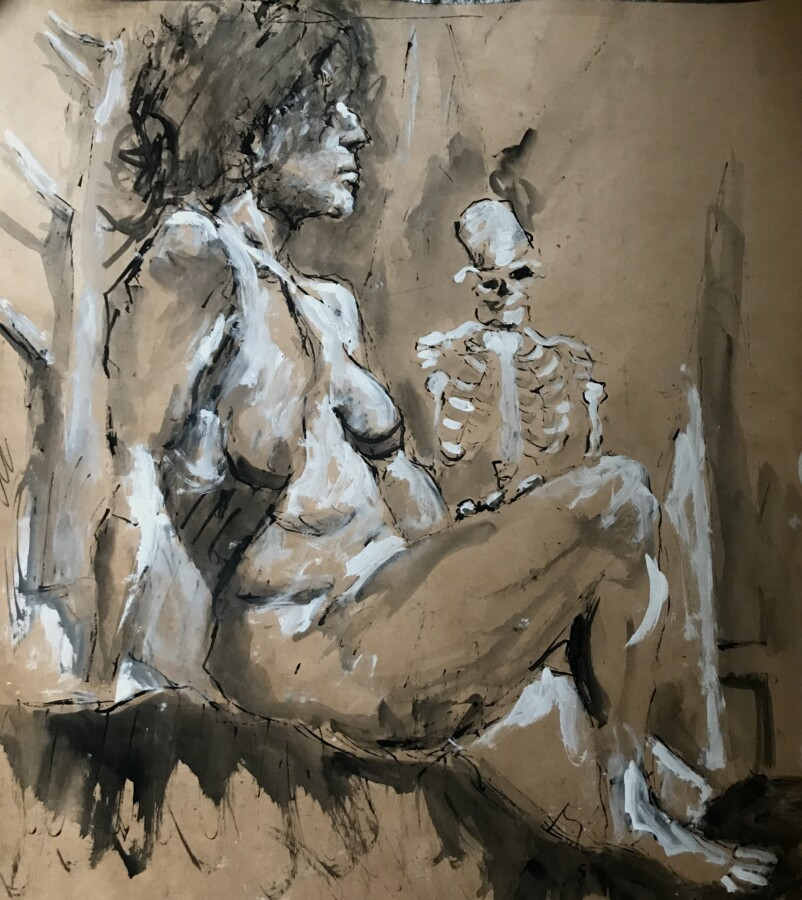

SUMMER SUITE 2026
Art Exhibition, Group Show, Mary Klug, Mary Palmer, joan Stachnik, Paula Herrere, Cindy Hiller, Mark Huddle, Bodo Stolczenberger

Art Exhibition, Group Show, Mary Klug, Mary Palmer, joan Stachnik, Paula Herrere, Cindy Hiller, Mark Huddle, Bodo Stolczenberger